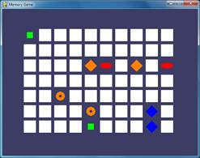
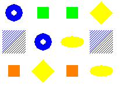
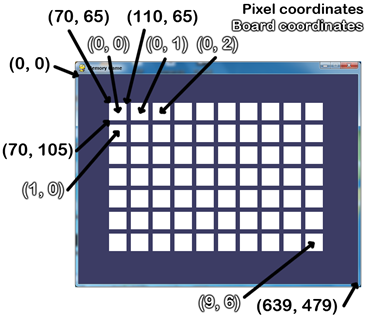

In the Memory Puzzle game, several icons are covered up by white boxes. There are two of each icon. The player can click on two boxes to see what icon is behind them. If the icons match, then those boxes remain uncovered. The player wins when all the boxes on the board are uncovered. To give the player a hint, the boxes are quickly uncovered once at the beginning of the game.
One concept that you will see in Memory Puzzle (and most of the games in this book) is the use of a for loop inside of another for loop. These are called nested for loops. Nested for loops are handy for going through every possible combination of two lists. Type the following into the interactive shell:
>>> for x in [0, 1, 2, 3, 4]:
... for y in ['a', 'b', 'c']:
... print(x, y)
...
0 a
0 b
0 c
1 a
1 b
1 c
2 a
2 b
2 c
3 a
3 b
3 c
4 a
4 b
4 c
>>>
There are several times in the Memory Puzzle code that we need to iterate through every possible X and Y coordinate on the board. We’ll use nested for loops to make sure that we get every combination. Note that the inner for loop (the for loop inside the other for loop) will go through all of its iterations before going to the next iteration of the outer for loop. If we reverse the order of the for loops, the same values will be printed but they will be printed in a different order. Type the following code into the interactive shell, and compare the order it prints values to the order in the previous nested for loop example:
>>> for y in ['a', 'b', 'c']:
... for x in [0, 1, 2, 3, 4]:
... print(x, y)
...
0 a
1 a
2 a
3 a
4 a
0 b
1 b
2 b
3 b
4 b
0 c
1 c
2 c
3 c
4 c
>>>
This source code can be downloaded from http://invpy.com/memorypuzzle.py.
Go ahead and first type in the entire program into IDLE’s file editor, save it as memorypuzzle.py, and run it. If you get any error messages, look at the line number that is mentioned in the error message and check your code for any typos. You can also copy and paste your code into the web form at http://invpy.com/diff/memorypuzzle to see if the differences between your code and the code in the book.
You’ll probably pick up a few ideas about how the program works just by typing it in once. And when you’re done typing it in, you can then play the game for yourself.
1. # Memory Puzzle
2. # By Al Sweigart al@inventwithpython.com
3. # http://inventwithpython.com/pygame
4. # Released under a "Simplified BSD" license
5.
6. import random, pygame, sys
7. from pygame.locals import *
8.
9. FPS = 30 # frames per second, the general speed of the program
10. WINDOWWIDTH = 640 # size of window's width in pixels
11. WINDOWHEIGHT = 480 # size of windows' height in pixels
12. REVEALSPEED = 8 # speed boxes' sliding reveals and covers
13. BOXSIZE = 40 # size of box height & width in pixels
14. GAPSIZE = 10 # size of gap between boxes in pixels
15. BOARDWIDTH = 10 # number of columns of icons
16. BOARDHEIGHT = 7 # number of rows of icons
17. assert (BOARDWIDTH * BOARDHEIGHT) % 2 == 0, 'Board needs to have an even number of boxes for pairs of matches.'
18. XMARGIN = int((WINDOWWIDTH - (BOARDWIDTH * (BOXSIZE + GAPSIZE))) / 2)
19. YMARGIN = int((WINDOWHEIGHT - (BOARDHEIGHT * (BOXSIZE + GAPSIZE))) / 2)
20.
21. # R G B
22. GRAY = (100, 100, 100)
23. NAVYBLUE = ( 60, 60, 100)
24. WHITE = (255, 255, 255)
25. RED = (255, 0, 0)
26. GREEN = ( 0, 255, 0)
27. BLUE = ( 0, 0, 255)
28. YELLOW = (255, 255, 0)
29. ORANGE = (255, 128, 0)
30. PURPLE = (255, 0, 255)
31. CYAN = ( 0, 255, 255)
32.
33. BGCOLOR = NAVYBLUE
34. LIGHTBGCOLOR = GRAY
35. BOXCOLOR = WHITE
36. HIGHLIGHTCOLOR = BLUE
37.
38. DONUT = 'donut'
39. SQUARE = 'square'
40. DIAMOND = 'diamond'
41. LINES = 'lines'
42. OVAL = 'oval'
43.
44. ALLCOLORS = (RED, GREEN, BLUE, YELLOW, ORANGE, PURPLE, CYAN)
45. ALLSHAPES = (DONUT, SQUARE, DIAMOND, LINES, OVAL)
46. assert len(ALLCOLORS) * len(ALLSHAPES) * 2 >= BOARDWIDTH * BOARDHEIGHT, "Board is too big for the number of shapes/colors defined."
47.
48. def main():
49. global FPSCLOCK, DISPLAYSURF
50. pygame.init()
51. FPSCLOCK = pygame.time.Clock()
52. DISPLAYSURF = pygame.display.set_mode((WINDOWWIDTH, WINDOWHEIGHT))
53.
54. mousex = 0 # used to store x coordinate of mouse event
55. mousey = 0 # used to store y coordinate of mouse event
56. pygame.display.set_caption('Memory Game')
57.
58. mainBoard = getRandomizedBoard()
59. revealedBoxes = generateRevealedBoxesData(False)
60.
61. firstSelection = None # stores the (x, y) of the first box clicked.
62.
63. DISPLAYSURF.fill(BGCOLOR)
64. startGameAnimation(mainBoard)
65.
66. while True: # main game loop
67. mouseClicked = False
68.
69. DISPLAYSURF.fill(BGCOLOR) # drawing the window
70. drawBoard(mainBoard, revealedBoxes)
71.
72. for event in pygame.event.get(): # event handling loop
73. if event.type == QUIT or (event.type == KEYUP and event.key == K_ESCAPE):
74. pygame.quit()
75. sys.exit()
76. elif event.type == MOUSEMOTION:
77. mousex, mousey = event.pos
78. elif event.type == MOUSEBUTTONUP:
79. mousex, mousey = event.pos
80. mouseClicked = True
81.
82. boxx, boxy = getBoxAtPixel(mousex, mousey)
83. if boxx != None and boxy != None:
84. # The mouse is currently over a box.
85. if not revealedBoxes[boxx][boxy]:
86. drawHighlightBox(boxx, boxy)
87. if not revealedBoxes[boxx][boxy] and mouseClicked:
88. revealBoxesAnimation(mainBoard, [(boxx, boxy)])
89. revealedBoxes[boxx][boxy] = True # set the box as "revealed"
90. if firstSelection == None: # the current box was the first box clicked
91. firstSelection = (boxx, boxy)
92. else: # the current box was the second box clicked
93. # Check if there is a match between the two icons.
94. icon1shape, icon1color = getShapeAndColor(mainBoard, firstSelection[0], firstSelection[1])
95. icon2shape, icon2color = getShapeAndColor(mainBoard, boxx, boxy)
96.
97. if icon1shape != icon2shape or icon1color != icon2color:
98. # Icons don't match. Re-cover up both selections.
99. pygame.time.wait(1000) # 1000 milliseconds = 1 sec
100. coverBoxesAnimation(mainBoard, [(firstSelection[0], firstSelection[1]), (boxx, boxy)])
101. revealedBoxes[firstSelection[0]][firstSelection [1]] = False
102. revealedBoxes[boxx][boxy] = False
103. elif hasWon(revealedBoxes): # check if all pairs found
104. gameWonAnimation(mainBoard)
105. pygame.time.wait(2000)
106.
107. # Reset the board
108. mainBoard = getRandomizedBoard()
109. revealedBoxes = generateRevealedBoxesData(False)
110.
111. # Show the fully unrevealed board for a second.
112. drawBoard(mainBoard, revealedBoxes)
113. pygame.display.update()
114. pygame.time.wait(1000)
115.
116. # Replay the start game animation.
117. startGameAnimation(mainBoard)
118. firstSelection = None # reset firstSelection variable
119.
120. # Redraw the screen and wait a clock tick.
121. pygame.display.update()
122. FPSCLOCK.tick(FPS)
123.
124.
125. def generateRevealedBoxesData(val):
126. revealedBoxes = []
127. for i in range(BOARDWIDTH):
128. revealedBoxes.append([val] * BOARDHEIGHT)
129. return revealedBoxes
130.
131.
132. def getRandomizedBoard():
133. # Get a list of every possible shape in every possible color.
134. icons = []
135. for color in ALLCOLORS:
136. for shape in ALLSHAPES:
137. icons.append( (shape, color) )
138.
139. random.shuffle(icons) # randomize the order of the icons list
140. numIconsUsed = int(BOARDWIDTH * BOARDHEIGHT / 2) # calculate how many icons are needed
141. icons = icons[:numIconsUsed] * 2 # make two of each
142. random.shuffle(icons)
143.
144. # Create the board data structure, with randomly placed icons.
145. board = []
146. for x in range(BOARDWIDTH):
147. column = []
148. for y in range(BOARDHEIGHT):
149. column.append(icons[0])
150. del icons[0] # remove the icons as we assign them
151. board.append(column)
152. return board
153.
154.
155. def splitIntoGroupsOf(groupSize, theList):
156. # splits a list into a list of lists, where the inner lists have at
157. # most groupSize number of items.
158. result = []
159. for i in range(0, len(theList), groupSize):
160. result.append(theList[i:i + groupSize])
161. return result
162.
163.
164. def leftTopCoordsOfBox(boxx, boxy):
165. # Convert board coordinates to pixel coordinates
166. left = boxx * (BOXSIZE + GAPSIZE) + XMARGIN
167. top = boxy * (BOXSIZE + GAPSIZE) + YMARGIN
168. return (left, top)
169.
170.
171. def getBoxAtPixel(x, y):
172. for boxx in range(BOARDWIDTH):
173. for boxy in range(BOARDHEIGHT):
174. left, top = leftTopCoordsOfBox(boxx, boxy)
175. boxRect = pygame.Rect(left, top, BOXSIZE, BOXSIZE)
176. if boxRect.collidepoint(x, y):
177. return (boxx, boxy)
178. return (None, None)
179.
180.
181. def drawIcon(shape, color, boxx, boxy):
182. quarter = int(BOXSIZE * 0.25) # syntactic sugar
183. half = int(BOXSIZE * 0.5) # syntactic sugar
184.
185. left, top = leftTopCoordsOfBox(boxx, boxy) # get pixel coords from board coords
186. # Draw the shapes
187. if shape == DONUT:
188. pygame.draw.circle(DISPLAYSURF, color, (left + half, top + half), half - 5)
189. pygame.draw.circle(DISPLAYSURF, BGCOLOR, (left + half, top + half), quarter - 5)
190. elif shape == SQUARE:
191. pygame.draw.rect(DISPLAYSURF, color, (left + quarter, top + quarter, BOXSIZE - half, BOXSIZE - half))
192. elif shape == DIAMOND:
193. pygame.draw.polygon(DISPLAYSURF, color, ((left + half, top), (left + BOXSIZE - 1, top + half), (left + half, top + BOXSIZE - 1), (left, top + half)))
194. elif shape == LINES:
195. for i in range(0, BOXSIZE, 4):
196. pygame.draw.line(DISPLAYSURF, color, (left, top + i), (left + i, top))
197. pygame.draw.line(DISPLAYSURF, color, (left + i, top + BOXSIZE - 1), (left + BOXSIZE - 1, top + i))
198. elif shape == OVAL:
199. pygame.draw.ellipse(DISPLAYSURF, color, (left, top + quarter, BOXSIZE, half))
200.
201.
202. def getShapeAndColor(board, boxx, boxy):
203. # shape value for x, y spot is stored in board[x][y][0]
204. # color value for x, y spot is stored in board[x][y][1]
205. return board[boxx][boxy][0], board[boxx][boxy][1]
206.
207.
208. def drawBoxCovers(board, boxes, coverage):
209. # Draws boxes being covered/revealed. "boxes" is a list
210. # of two-item lists, which have the x & y spot of the box.
211. for box in boxes:
212. left, top = leftTopCoordsOfBox(box[0], box[1])
213. pygame.draw.rect(DISPLAYSURF, BGCOLOR, (left, top, BOXSIZE, BOXSIZE))
214. shape, color = getShapeAndColor(board, box[0], box[1])
215. drawIcon(shape, color, box[0], box[1])
216. if coverage > 0: # only draw the cover if there is an coverage
217. pygame.draw.rect(DISPLAYSURF, BOXCOLOR, (left, top, coverage, BOXSIZE))
218. pygame.display.update()
219. FPSCLOCK.tick(FPS)
220.
221.
222. def revealBoxesAnimation(board, boxesToReveal):
223. # Do the "box reveal" animation.
224. for coverage in range(BOXSIZE, (-REVEALSPEED) - 1, - REVEALSPEED):
225. drawBoxCovers(board, boxesToReveal, coverage)
226.
227.
228. def coverBoxesAnimation(board, boxesToCover):
229. # Do the "box cover" animation.
230. for coverage in range(0, BOXSIZE + REVEALSPEED, REVEALSPEED):
231. drawBoxCovers(board, boxesToCover, coverage)
232.
233.
234. def drawBoard(board, revealed):
235. # Draws all of the boxes in their covered or revealed state.
236. for boxx in range(BOARDWIDTH):
237. for boxy in range(BOARDHEIGHT):
238. left, top = leftTopCoordsOfBox(boxx, boxy)
239. if not revealed[boxx][boxy]:
240. # Draw a covered box.
241. pygame.draw.rect(DISPLAYSURF, BOXCOLOR, (left, top, BOXSIZE, BOXSIZE))
242. else:
243. # Draw the (revealed) icon.
244. shape, color = getShapeAndColor(board, boxx, boxy)
245. drawIcon(shape, color, boxx, boxy)
246.
247.
248. def drawHighlightBox(boxx, boxy):
249. left, top = leftTopCoordsOfBox(boxx, boxy)
250. pygame.draw.rect(DISPLAYSURF, HIGHLIGHTCOLOR, (left - 5, top - 5, BOXSIZE + 10, BOXSIZE + 10), 4)
251.
252.
253. def startGameAnimation(board):
254. # Randomly reveal the boxes 8 at a time.
255. coveredBoxes = generateRevealedBoxesData(False)
256. boxes = []
257. for x in range(BOARDWIDTH):
258. for y in range(BOARDHEIGHT):
259. boxes.append( (x, y) )
260. random.shuffle(boxes)
261. boxGroups = splitIntoGroupsOf(8, boxes)
262.
263. drawBoard(board, coveredBoxes)
264. for boxGroup in boxGroups:
265. revealBoxesAnimation(board, boxGroup)
266. coverBoxesAnimation(board, boxGroup)
267.
268.
269. def gameWonAnimation(board):
270. # flash the background color when the player has won
271. coveredBoxes = generateRevealedBoxesData(True)
272. color1 = LIGHTBGCOLOR
273. color2 = BGCOLOR
274.
275. for i in range(13):
276. color1, color2 = color2, color1 # swap colors
277. DISPLAYSURF.fill(color1)
278. drawBoard(board, coveredBoxes)
279. pygame.display.update()
280. pygame.time.wait(300)
281.
282.
283. def hasWon(revealedBoxes):
284. # Returns True if all the boxes have been revealed, otherwise False
285. for i in revealedBoxes:
286. if False in i:
287. return False # return False if any boxes are covered.
288. return True
289.
290.
291. if __name__ == '__main__':
292. main()
1. # Memory Puzzle
2. # By Al Sweigart al@inventwithpython.com
3. # http://inventwithpython.com/pygame
4. # Released under a "Simplified BSD" license
5.
6. import random, pygame, sys
7. from pygame.locals import *
At the top of the program are comments about what the game is, who made it, and where the user could find more information. There’s also a note that the source code is freely copyable under a “Simplified BSD” license. The Simplified BSD license is more appropriate for software than the Creative Common license (which this book is released under), but they basically mean the same thing: People are free to copy and share this game. More info about licenses can be found at http://invpy.com/licenses.
This program makes use of many functions in other modules, so it imports those modules on line 6. Line 7 is also an import statement in the from (module name) import * format, which means you do not have to type the module name in front of it. There are no functions in the pygame.locals module, but there are several constant variables in it that we want to use such as MOUSEMOTION, KEYUP, or QUIT. Using this style of import statement, we only have to type MOUSEMOTION rather than pygame.locals.MOUSEMOTION.
9. FPS = 30 # frames per second, the general speed of the program
10. WINDOWWIDTH = 640 # size of window's width in pixels
11. WINDOWHEIGHT = 480 # size of windows' height in pixels
12. REVEALSPEED = 8 # speed boxes' sliding reveals and covers
13. BOXSIZE = 40 # size of box height & width in pixels
14. GAPSIZE = 10 # size of gap between boxes in pixels
The game programs in this book use a lot of constant variables. You might not realize why they’re so handy. For example, instead of using the BOXSIZE variable in our code we could just type the integer 40 directly in the code. But there are two reasons to use constant variables.
First, if we ever wanted to change the size of each box later, we would have to go through the entire program and find and replace each time we typed 40. By just using the BOXSIZE constant, we only have to change line 13 and the rest of the program is already up to date. This is much better, especially since we might use the integer value 40 for something else besides the size of the white boxes, and changing that 40 accidentally would cause bugs in our program.
Second, it makes the code more readable. Go down to the next section and look at line 18. This sets up a calculation for the XMARGIN constant, which is how many pixels are on the side of the entire board. It is a complicated looking expression, but you can carefully piece out what it means. Line 18 looks like this:
XMARGIN = int((WINDOWWIDTH - (BOARDWIDTH * (BOXSIZE + GAPSIZE))) / 2)
But if line 18 didn’t use constant variables, it would look like this:
XMARGIN = int((640 – (10 * (40 + 10))) / 2)
Now it becomes impossible to remember what exactly the programmer intended to mean. These unexplained numbers in the source code are often called magic numbers. Whenever you find yourself entering magic numbers, you should consider replacing them with a constant variable instead. To the Python interpreter, both of the previous lines are the exact same. But to a human programmer who is reading the source code and trying to understand how it works, the second version of line 18 doesn’t make much sense at all! Constants really help the readability of source code.
Of course, you can go too far replacing numbers with constant variables. Look at the following code:
ZERO = 0
ONE = 1
TWO = 99999999
TWOANDTHREEQUARTERS = 2.75
Don’t write code like that. That’s just silly.
15. BOARDWIDTH = 10 # number of columns of icons
16. BOARDHEIGHT = 7 # number of rows of icons
17. assert (BOARDWIDTH * BOARDHEIGHT) % 2 == 0, 'Board needs to have an even number of boxes for pairs of matches.'
18. XMARGIN = int((WINDOWWIDTH - (BOARDWIDTH * (BOXSIZE + GAPSIZE))) / 2)
19. YMARGIN = int((WINDOWHEIGHT - (BOARDHEIGHT * (BOXSIZE + GAPSIZE))) / 2)
The assert statement on line 15 ensures that the board width and height we’ve selected will result in an even number of boxes (since we will have pairs of icons in this game). There are three parts to an assert statement: the assert keyword, an expression which, if False, results in crashing the program. The third part (after the comma after the expression) is a string that appears if the program crashes because of the assertion.
The assert statement with an expression basically says, “The programmer asserts that this expression must be True, otherwise crash the program.” This is a good way of adding a sanity check to your program to make sure that if the execution ever passes an assertion we can at least know that that code is working as expected.
If the product of the board width and height is divided by two and has a remainder of 0 (the % modulus operator evaluates what the remainder is) then the number is even. Even numbers divided by two will always have a remainder of zero. Odd numbers divided by two will always have a remainder of one. This is a good trick to remember if you need your code to tell if a number is even or odd:
>>> isEven = someNumber % 2 == 0
>>> isOdd = someNumber % 2 != 0
In the above case, if the integer in someNumber was even, then isEven will be True. If it was odd, then isOdd will be True.
Having your program crash is a bad thing. It happens when your program has some mistake in the code and cannot continue. But there are some cases where crashing a program early can avoid worse bugs later.
If the values we chose for BOARDWIDTH and BOARDHEIGHT that we chose on line 15 and 16 result in a board with an odd number of boxes (such as if the width were 3 and the height were 5), then there would always be one left over icon that would not have a pair to be matched with. This would cause a bug later on in the program, and it could take a lot of debugging work to figure out that the real source of the bug is at the very beginning of the program. In fact, just for fun, try commenting out the assertion so it doesn’t run, and then setting the BOARDWIDTH and BOARDHEIGHT constants both to odd numbers. When you run the program, it will immediately show an error happening on a line 149 in memorypuzzle.py, which is in getRandomizedBoard() function!
Traceback (most recent call last):
File "C:\book2svn\src\memorypuzzle.py", line 292, in <module>
main()
File "C:\book2svn\src\memorypuzzle.py", line 58, in main
mainBoard = getRandomizedBoard()
File "C:\book2svn\src\memorypuzzle.py", line 149, in getRandomizedBoard
columns.append(icons[0])
IndexError: list index out of range
We could spend a lot of time looking at getRandomizedBoard() trying to figure out what’s wrong with it before realizing that getRandomizedBoard() is perfectly fine: the real source of the bug was on line 15 and 16 where we set the BOARDWIDTH and BOARDHEIGHT constants.
The assertion makes sure that this never happens. If our code is going to crash, we want it to crash as soon as it detects something is terribly wrong, because otherwise the bug may not become apparent until much later in the program. Crash early!
You want to add assert statements whenever there is some condition in your program that must always, always, always be True. Crash often! You don’t have to go overboard and put assert statements everywhere, but crashing often with asserts goes a long way in detecting the true source of a bug. Crash early and crash often!
(In your code that is. Not, say, when riding a pony.)
21. # R G B
22. GRAY = (100, 100, 100)
23. NAVYBLUE = ( 60, 60, 100)
24. WHITE = (255, 255, 255)
25. RED = (255, 0, 0)
26. GREEN = ( 0, 255, 0)
27. BLUE = ( 0, 0, 255)
28. YELLOW = (255, 255, 0)
29. ORANGE = (255, 128, 0)
30. PURPLE = (255, 0, 255)
31. CYAN = ( 0, 255, 255)
32.
33. BGCOLOR = NAVYBLUE
34. LIGHTBGCOLOR = GRAY
35. BOXCOLOR = WHITE
36. HIGHLIGHTCOLOR = BLUE
Remember that colors in Pygame are represented by a tuple of three integers from 0 to 255. These three integers represent the amount of red, green, and blue in the color which is why these tuples are called RGB values. Notice the spacing of the tuples on lines 22 to 31 are such that the R, G, and B integers line up. In Python the indentation (that is, the space at the beginning of the line) is needs to be exact, but the spacing in the rest of the line is not so strict. By spacing the integers in the tuple out, we can clearly see how the RGB values compare to each other. (More info on spacing and indentation is as http://invpy.com/whitespace.)
It is a nice thing to make your code more readable this way, but don’t bother spending too much time doing it. Code doesn’t have to be pretty to work. At a certain point, you’ll just be spending more time typing spaces than you would have saved by having readable tuple values.
38. DONUT = 'donut'
39. SQUARE = 'square'
40. DIAMOND = 'diamond'
41. LINES = 'lines'
42. OVAL = 'oval'
The program also sets up constant variables for some strings. These constants will be used in the data structure for the board, tracking which spaces on the board have which icons. Using a constant variable instead of the string value is a good idea. Look at the following code, which comes from line 187:
if shape == DONUT:
The shape variable will be set to one of the strings 'donut', 'square', 'diamond', 'lines', or 'oval' and then compared to the DONUT constant. If we made a typo when writing line 187, for example, something like this:
if shape == DUNOT:
Then Python would crash, giving an error message saying that there is no variable named DUNOT. This is good. Since the program has crashed on line 187, when we check that line it will be easy to see that the bug was caused by a typo. However, if we were using strings instead of constant variables and made the same typo, line 187 would look like this:
if shape == 'dunot':
This is perfectly acceptable Python code, so it won’t crash at first when you run it. However, this will lead to weird bugs later on in our program. Because the code does not immediately crash where the problem is caused, it can be much harder to find it.
44. ALLCOLORS = (RED, GREEN, BLUE, YELLOW, ORANGE, PURPLE, CYAN)
45. ALLSHAPES = (DONUT, SQUARE, DIAMOND, LINES, OVAL)
46. assert len(ALLCOLORS) * len(ALLSHAPES) * 2 >= BOARDWIDTH * BOARDHEIGHT, "Board is too big for the number of shapes/colors defined."
In order for our game program to be able to create icons of every possible color and shape combination, we need to make a tuple that holds all of these values. There is also another assertion on line 46 to make sure that there are enough color/shape combinations for the size of the board we have. If there isn’t, then the program will crash on line 46 and we will know that we either have to add more colors and shapes, or make the board width and height smaller. With 7 colors and 5 shapes, we can make 35 (that is, 7 x 5) different icons. And because we’ll have a pair of each icon, that means we can have a board with up to 70 (that is, 35 x 2, or 7 x 5 x 2) spaces.
You might have noticed that the ALLCOLORS and ALLSHAPES variables are tuples instead of lists. When do we want to use tuples and when do we want to use lists? And what’s the difference between them anyway?
Tuples and lists are the same in every way except two: tuples use parentheses instead of square brackets, and the items in tuples cannot be modified (but the items in lists can be modified). We often call lists mutable (meaning they can be changed) and tuples immutable (meaning they cannot be changed).
For an example of trying to change values in lists and tuples, look at the following code:
>>> listVal = [1, 1, 2, 3, 5, 8]
>>> tupleVal = (1, 1, 2, 3, 5, 8)
>>> listVal[4] = 'hello!'
>>> listVal
[1, 1, 2, 3, 'hello!', 8]
>>> tupleVal[4] = 'hello!'
Traceback (most recent call last):
File "<stdin>", line 1, in <module>
TypeError: 'tuple' object does not support item assignment
>>> tupleVal
(1, 1, 2, 3, 5, 8)
>>> tupleVal[4]
5
Notice that when we try to change the item at index 2 in the tuple, Python gives us an error message saying that tuple objects do not support “item assignment”.
There is a silly benefit and an important benefit to tuple’s immutability. The silly benefit is that code that uses tuples is slightly faster than code that uses lists. (Python is able to make some optimizations knowing that the values in a tuple will never change.) But having your code run a few nanoseconds faster is not important.
The important benefit to using tuples is similar to the benefit of using constant variables: it’s a sign that the value in the tuple will never change, so anyone reading the code later will be able to say, “I can expect that this tuple will always be the same. Otherwise the programmer would have used a list.” This also lets a future programmer reading your code say, “If I see a list value, I know that it could be modified at some point in this program. Otherwise, the programmer who wrote this code would have used a tuple.”
You can still assign a new tuple value to a variable:
>>> tupleVal = (1, 2, 3)
>>> tupleVal = (1, 2, 3, 4)
The reason this code works is because the code isn’t changing the (1, 2, 3) tuple on the second line. It is assigning an entirely new tuple (1, 2, 3, 4) to the tupleVal, and overwriting the old tuple value. You cannot however, use the square brackets to modify an item in the tuple.
Strings are also an immutable data type. You can use the square brackets to read a single character in a string, but you cannot change a single character in a string:
>>> strVal = 'Hello'
>>> strVal[1]
'e'
>>> strVal[1] = 'X'
Traceback (most recent call last):
File "<stdin>", line 1, in <module>
TypeError: 'str' object does not support item assignment
Also, one minor details about tuples: if you ever need to write code about a tuple that has one value in it, then it needs to have a trailing comma in it, such as this:
oneValueTuple = (42, )
If you forget this comma (and it is very easy to forget), then Python won’t be able to tell the difference between this and a set of parentheses that just change the order of operations. For example, look at the following two lines of code:
variableA = (5 * 6)
variableB = (5 * 6, )
The value that is stored in variableA is just the integer 30. However, the expression for variableB’s assignment statement is the single-item tuple value (30, ). Blank tuple values do not need a comma in them, they can just be a set of parentheses by themselves: ().
You can convert between list and tuple values just like you can convert between string and integer values. Just pass a tuple value to the list() function and it will return a list form of that tuple value. Or, pass a list value to the tuple() function and it will return a tuple form of that list value. Try typing the following into the interactive shell:
>>> spam = (1, 2, 3, 4)
>>> spam = list(spam)
>>> spam
[1, 2, 3, 4]
>>> spam = tuple(spam)
>>> spam
(1, 2, 3, 4)
>>>
48. def main():
49. global FPSCLOCK, DISPLAYSURF
50. pygame.init()
51. FPSCLOCK = pygame.time.Clock()
52. DISPLAYSURF = pygame.display.set_mode((WINDOWWIDTH, WINDOWHEIGHT))
53.
54. mousex = 0 # used to store x coordinate of mouse event
55. mousey = 0 # used to store y coordinate of mouse event
56. pygame.display.set_caption('Memory Game')
This is the start of the main() function, which is where (oddly enough) the main part of the game code is. The functions called in the main() function will be explained later in this chapter.
Line 49 is a global statement. The global statement is the global keyword followed by a comma-delimited list of variable names. These variable names are then marked as global variables. Inside the main() function, those names are not for local variables that might just happen to have the same name as global variables. They are the global variables. Any values assigned to them in the main() function will persist outside the main() function. We are marking the FPSCLOCK and DISPLAYSURF variables as global because they are used in several other functions in the program. (More info is at http://invpy.com/scope.)
There are four simple rules to determine if a variable is local or global:
1. If there is a global statement for a variable at the beginning of the function, then the variable is global.
2. If the name of a variable in a function has the same name as a global variable and the function never assigns the variable a value, then that variable is the global variable.
3. If the name of a variable in a function has the same name as a global variable and the function does assign the variable a value, then that variable is a local variable.
4. If there isn't a global variable with the same name as the variable in the function, then that variable is obviously a local variable.
You generally want to avoid using global variables inside functions. A function is supposed to be like a mini-program inside your program with specific inputs (the parameters) and an output (the return value). But a function that reads and writes to global variables has additional inputs and output. Since the global variable could have been modified in many places before the function was called, it can be tricky to track down a bug involving a bad value set in the global variable.
Having a function as a separate mini-program that doesn’t use global variables makes it easier to find bugs in your code, since the parameters of the function are clearly known. It also makes changing the code in a function easier, since if the new function works with the same parameters and gives the same return value, it will automatically work with the rest of the program just like the old function.
Basically, using global variables might make it easier to write your program but they generally make it harder to debug.
In the games in this book, global variables are mostly used for variables that would be global constants that never change, but need the pygame.init() function called first. Since this happens in the main() function, they are set in the main() function and must be global for other functions to see them. But the global variables are used as constants and don’t change, so they are less likely to cause confusing bugs.
If you don’t understand this, don’t worry. Just write your code so that you pass in values to functions rather than have the functions read global variables as a general rule.
58. mainBoard = getRandomizedBoard()
59. revealedBoxes = generateRevealedBoxesData(False)
The getRandomizedBoard() function returns a data structure that represents the state of the board. The generateRevealedBoxesData() function returns a data structure that represents which boxes are covered, respectively. The return values of these functions are two dimensional (2D) lists, or lists of lists. A list of lists of lists of values would be a 3D list. Another word for two or more dimensional lists is a multidimensional list.
If we have a list value stored in a variable named spam, we could access a value in that list with the square brackets, such as spam[2] to retrieve the third value in the list. If the value at spam[2] is itself a list, then we could use another set of square brackets to retrieve a value in that list. This would look like, for example, spam[2][4], which would retrieve the fifth value in the list that is the third value in spam. Using this notation of lists of lists makes it easy to map a 2D board to a 2D list value. Since the mainBoard variable will store icons in it, if we wanted to get the icon on the board at the position (4, 5) then we could just use the expression mainBoard[4][5]. Since the icons themselves are stored as two-item tuples with the shape and color, the complete data structure is a list of list of two-item tuples. Whew!
Here’s an small example. Say the board looked like this:

The corresponding data structure would be:
mainBoard = [[(DONUT, BLUE), (LINES, BLUE), (SQUARE, ORANGE)], [(SQUARE, GREEN), (DONUT, BLUE), (DIAMOND, YELLOW)], [(SQUARE, GREEN), (OVAL, YELLOW), (SQUARE, ORANGE)], [(DIAMOND, YELLOW), (LINES, BLUE), (OVAL, YELLOW)]]
(If your book is in black and white, you can see a color version of the above picture at http://invpy.com/memoryboard.) You’ll notice that mainBoard[x][y] will correspond to the icon at the (x, y) coordinate on the board.
Meanwhile, the “revealed boxes” data structure is also a 2D list, except instead of two-item tuples like the board data structure, it has Boolean values: True if the box at that x, y coordinate is revealed, and False if it is covered up. Passing False to the generateRevealedBoxesData() function sets all of the Boolean values to False. (This function is explained in detail later.)
These two data structures are used to keep track of the state of the game board.
61. firstSelection = None # stores the (x, y) of the first box clicked.
62.
63. DISPLAYSURF.fill(BGCOLOR)
64. startGameAnimation(mainBoard)
Line 61 sets up a variable called firstSelection with the value None. (None is the value that represents a lack of a value. It is the only value of the data type, NoneType. More info at http://invpy.com/None) When the player clicks on an icon on the board, the program needs to track if this was the first icon of the pair that was clicked on or the second icon. If firstSelection is None, the click was on the first icon and we store the XY coordinates in the firstSelection variable as a tuple of two integers (one for the X value, the other for Y). On the second click the value will be this tuple and not None, which is how the program tracks that it is the second icon click. Line 63 fills the entire surface with the background color. This will also paint over anything that used to be on the surface, which gives us a clean slate to start drawing graphics on.
If you’ve played the Memory Puzzle game, you’ll notice that at the beginning of the game, all of the boxes are quickly covered and uncovered randomly to give the player a sneak peek at which icons are under which boxes. This all happens in the startGameAnimation() function, which is explained later in this chapter.
It’s important to give the player this sneak peek (but not long enough of a peek to let the player easily memorize the icon locations), because otherwise they would have no clue where any icons are. Blindly clicking on the icons isn’t as much fun as having a little hint to go on.
66. while True: # main game loop
67. mouseClicked = False
68.
69. DISPLAYSURF.fill(BGCOLOR) # drawing the window
70. drawBoard(mainBoard, revealedBoxes)
The game loop is an infinite loop that starts on line 66 that keeps iterating for as long as the game is in progress. Remember that the game loop handles events, updates the game state, and draws the game state to the screen.
The game state for the Memory Puzzle program is stored in the following variables:
· mainBoard
· revealedBoxes
· firstSelection
· mouseClicked
· mousex
· mousey
On each iteration of the game loop in the Memory Puzzle program, the mouseClicked variable stores a Boolean value that is True if the player has clicked the mouse during this iteration through the game loop. (This is part of keeping track of the game state.)
On line 69, the surface is painted over with the background color to erase anything that was previously drawn on it. The program then calls drawBoard() to draw the current state of the board based on the board and “revealed boxes” data structures that we pass it. (These lines of code are part of drawing and updating the screen.)
Remember that our drawing functions only draw on the in-memory display Surface object. This Surface object will not actually appear on the screen until we call pygame.display.update(), which is done at the end of the game loop on line 121.
72. for event in pygame.event.get(): # event handling loop
73. if event.type == QUIT or (event.type == KEYUP and event.key == K_ESCAPE):
74. pygame.quit()
75. sys.exit()
76. elif event.type == MOUSEMOTION:
77. mousex, mousey = event.pos
78. elif event.type == MOUSEBUTTONUP:
79. mousex, mousey = event.pos
80. mouseClicked = True
The for loop on line 72 executes code for every event that has happened since the last iteration of the game loop. This loop is called the event handling loop (which is different from the game loop, although the event handling loop is inside of the game loop) and iterates over the list of pygame.Event objects returned by the pygame.event.get() call.
If the event object was a either a QUIT event or a KEYUP event for the Esc key, then the program should terminate. Otherwise, in the event of a MOUSEMOTION event (that is, the mouse cursor has moved) or MOUSEBUTTONUP event (that is, a mouse button was pressed earlier and now the button was let up), the position of the mouse cursor should be stored in the mousex and mousey variables. If this was a MOUSEBUTTONUP event, mouseClicked should also be set to True.
Once we have handled all of the events, the values stored in mousex, mousey, and mouseClicked will tell us any input that player has given us. Now we should update the game state and draw the results to the screen.
82. boxx, boxy = getBoxAtPixel(mousex, mousey)
83. if boxx != None and boxy != None:
84. # The mouse is currently over a box.
85. if not revealedBoxes[boxx][boxy]:
86. drawHighlightBox(boxx, boxy)
The getBoxAtPixel() function will return a tuple of two integers. The integers represent the XY board coordinates of the box that the mouse coordinates are over. How getBoxAtPixel() does this is explained later. All we have to know for now is that if the mousex and mousey coordinates were over a box, a tuple of the XY board coordinates are returned by the function and stored in boxx and boxy. If the mouse cursor was not over any box (for example, if it was off to the side of the board or in a gap in between boxes) then the tuple (None, None) is returned by the function and boxx and boxy will both have None stored in them.
We are only interested in the case where boxx and boxy do not have None in them, so the next several lines of code are in the block following the if statement on line 83 that checks for this case. If execution has come inside this block, we know the user has the mouse cursor over a box (and maybe has also clicked the mouse, depending on the value stored in mouseClicked).
The if statement on line 85 checks if the box is covered up or not by reading the value stored in revealedBoxes[boxx][boxy]. If it is False, then we know the box is covered. Whenever the mouse is over a covered up box, we want to draw a blue highlight around the box to inform the player that they can click on it. This highlighting is not done for boxes that are already uncovered. The highlight drawing is handled by our drawHighlightBox() function, which is explained later.
87. if not revealedBoxes[boxx][boxy] and mouseClicked:
88. revealBoxesAnimation(mainBoard, [(boxx, boxy)])
89. revealedBoxes[boxx][boxy] = True # set the box as "revealed"
On line 87, we check if the mouse cursor is not only over a covered up box but if the mouse has also been clicked. In that case, we want to play the “reveal” animation for that box by calling our revealBoxesAnimation() function (which is, as with all the other functions main() calls, explained later in this chapter). You should note that calling this function only draws the animation of the box being uncovered. It isn’t until line 89 when we set revealedBoxes[boxx][boxy] = True that the data structure that tracks the game state is updated.
If you comment out line 89 and then run the program, you’ll notice that after clicking on a box the reveal animation is played, but then the box immediately appears covered up again. This is because revealedBoxes[boxx][boxy] is still set to False, so on the next iteration of the game loop, the board is drawn with this box covered up. Not having line 89 would cause quite an odd bug in our program.
90. if firstSelection == None: # the current box was the first box clicked
91. firstSelection = (boxx, boxy)
92. else: # the current box was the second box clicked
93. # Check if there is a match between the two icons.
94. icon1shape, icon1color = getShapeAndColor(mainBoard, firstSelection[0], firstSelection[1])
95. icon2shape, icon2color = getShapeAndColor(mainBoard, boxx, boxy)
Before the execution entered the game loop, the firstSelection variable was set to None. Our program will interpret this to mean that no boxes have been clicked, so if line 90’s condition is True, that means this is the first of the two possibly matching boxes that was clicked. We want to play the reveal animation for the box and then keep that box uncovered. We also set the firstSelection variable to a tuple of the box coordinates for the box that was clicked.
If this is the second box the player has clicked on, we want to play the reveal animation for that box but then check if the two icons under the boxes are matching. The getShapeAndColor() function (explained later) will retrieve the shape and color values of the icons. (These values will be one of the values in the ALLCOLORS and ALLSHAPES tuples.)
97. if icon1shape != icon2shape or icon1color != icon2color:
98. # Icons don't match. Re-cover up both selections.
99. pygame.time.wait(1000) # 1000 milliseconds = 1 sec
100. coverBoxesAnimation(mainBoard, [(firstSelection[0], firstSelection[1]), (boxx, boxy)])
101. revealedBoxes[firstSelection[0]][firstSelection [1]] = False
102. revealedBoxes[boxx][boxy] = False
The if statement on line 97 checks if either the shapes or colors of the two icons don’t match. If this is the case, then we want to pause the game for 1000 milliseconds (which is the same as 1 second) by calling pygame.time.wait(1000) so that the player has a chance to see that the two icons don’t match. Then the “cover up” animation plays for both boxes. We also want to update the game state to mark these boxes as not revealed (that is, covered up).
103. elif hasWon(revealedBoxes): # check if all pairs found
104. gameWonAnimation(mainBoard)
105. pygame.time.wait(2000)
106.
107. # Reset the board
108. mainBoard = getRandomizedBoard()
109. revealedBoxes = generateRevealedBoxesData(False)
110.
111. # Show the fully unrevealed board for a second.
112. drawBoard(mainBoard, revealedBoxes)
113. pygame.display.update()
114. pygame.time.wait(1000)
115.
116. # Replay the start game animation.
117. startGameAnimation(mainBoard)
118. firstSelection = None # reset firstSelection variable
Otherwise, if line 97’s condition was False, then the two icons must be a match. The program doesn’t really have to do anything else to the boxes at that point: it can just leave both boxes in the revealed state. However, the program should check if this was the last pair of icons on the board to be matched. This is done inside our hasWon() function, which returns True if the board is in a winning state (that is, all of the boxes are revealed).
If that is the case, we want to play the “game won” animation by calling gameWonAnimation(), then pause slightly to let the player revel in their victory, and then reset the data structures in mainBoard and revealedBoxes to start a new game.
Line 117 plays the “start game” animation again. After that, the program execution will just loop through the game loop as usual, and the player can continue playing until they quit the program.
No matter if the two boxes were matching or not, after the second box was clicked line 118 will set the firstSelection variable back to None so that the next box the player clicks on will be interpreted as the first clicked box of a pair of possibly matching icons.
120. # Redraw the screen and wait a clock tick.
121. pygame.display.update()
122. FPSCLOCK.tick(FPS)
At this point, the game state has been updated depending on the player’s input, and the latest game state has been drawn to the DISPLAYSURF display Surface object. We’ve reached the end of the game loop, so we call pygame.display.update() to draw the DISPLAYSURF Surface object to the computer screen.
Line 9 set the FPS constant to the integer value 30, meaning we want the game to run (at most) at 30 frames per second. If we want the program to run faster, we can increase this number. If we want the program to run slower, we can decrease this number. It can even be set to a float value like 0.5, which will run the program at half a frame per second, that is, one frame per two seconds.
In order to run at 30 frames per second, each frame must be drawn in 1/30th of a second. This means that pygame.display.update() and all the code in the game loop must execute in under 33.3 milliseconds. Any modern computer can do this easily with plenty of time left over. To prevent the program from running too fast, we call the tick() method of the pygame.Clock object in FPSCLOCK to have to it pause the program for the rest of the 33.3 milliseconds.
Since this is done at the very end of the game loop, it ensures that each iteration of the game loop takes (at least) 33.3 milliseconds. If for some reason the pygame.display.update() call and the code in the game loop takes longer than 33.3 milliseconds, then the tick() method will not wait at all and immediately return.
I’ve kept saying that the other functions would be explained later in the chapter. Now that we’ve gone over the main() function and you have an idea for how the general program works, let’s go into the details of all the other functions that are called from main().
125. def generateRevealedBoxesData(val):
126. revealedBoxes = []
127. for i in range(BOARDWIDTH):
128. revealedBoxes.append([val] * BOARDHEIGHT)
129. return revealedBoxes
The generateRevealedBoxesData() function needs to create a list of lists of Boolean values. The Boolean value will just be the one that is passed to the function as the val parameter. We start the data structure as an empty list in the revealedBoxes variable.
In order to make the data structure have the revealedBoxes[x][y] structure, we need to make sure that the inner lists represent the vertical columns of the board and not the horizontal rows. Otherwise, the data structure will have a revealedBoxes[y][x] structure.
The for loop will create the columns and then append them to revealedBoxes. The columns are created using list replication, so that the column list has as many val values as the BOARDHEIGHT dictates.
132. def getRandomizedBoard():
133. # Get a list of every possible shape in every possible color.
134. icons = []
135. for color in ALLCOLORS:
136. for shape in ALLSHAPES:
137. icons.append( (shape, color) )
The board data structure is just a list of lists of tuples, where each tuple has a two values: one for the icon’s shape and one for the icon’s color. But creating this data structure is a little complicated. We need to be sure to have exactly as many icons for the number of boxes on the board and also be sure there are two and only two icons of each type.
The first step to do this is to create a list with every possible combination of shape and color. Recall that we have a list of each color and shape in ALLCOLORS and ALLSHAPES, so nested for loops on lines 135 and 136 will go through every possible shape for every possible color. These are each added to the list in the icons variable on line 137.
139. random.shuffle(icons) # randomize the order of the icons list
140. numIconsUsed = int(BOARDWIDTH * BOARDHEIGHT / 2) # calculate how many icons are needed
141. icons = icons[:numIconsUsed] * 2 # make two of each
142. random.shuffle(icons)
But remember, there may be more possible combinations than spaces on the board. We need to calculate the number of spaces on the board by multiplying BOARDWIDTH by BOARDHEIGHT. Then we divide that number by 2 because we will have pairs of icons. On a board with 70 spaces, we’d only need 35 different icons, since there will be two of each icon. This number will be stored in numIconsUsed.
Line 141 uses list slicing to grab the first numIconsUsed number of icons in the list. (If you’ve forgotten how list slicing works, check out http://invpy.com/slicing.) This list has been shuffled on line 139, so it won’t always be the same icons each game. Then this list is replicated by using the * operator so that there are two of each of the icons. This new doubled up list will overwrite the old list in the icons variable. Since the first half of this new list is identical to the last half, we call the shuffle() method again to randomly mix up the order of the icons.
144. # Create the board data structure, with randomly placed icons.
145. board = []
146. for x in range(BOARDWIDTH):
147. column = []
148. for y in range(BOARDHEIGHT):
149. column.append(icons[0])
150. del icons[0] # remove the icons as we assign them
151. board.append(column)
152. return board
Now we need to create a list of lists data structure for the board. We can do this with nested for loops just like the generateRevealedBoxesData() function did. For each column on the board, we will create a list of randomly selected icons. As we add icons to the column, on line 149 we will then delete them from the front of the icons list on line 150. This way, as the icons list gets shorter and shorter, icons[0] will have a different icon to add to the columns.
To picture this better, type the following code into the interactive shell. Notice how the del statement changes the myList list.
>>> myList = ['cat', 'dog', 'mouse', 'lizard']
>>> del myList[0]
>>> myList
['dog', 'mouse', 'lizard']
>>> del myList[0]
>>> myList
['mouse', 'lizard']
>>> del myList[0]
>>> myList
['lizard']
>>> del myList[0]
>>> myList
[]
>>>
Because we are deleting the item at the front of the list, the other items shift forward so that the next item in the list becomes the new “first” item. This is the same way line 150 works.
155. def splitIntoGroupsOf(groupSize, theList):
156. # splits a list into a list of lists, where the inner lists have at
157. # most groupSize number of items.
158. result = []
159. for i in range(0, len(theList), groupSize):
160. result.append(theList[i:i + groupSize])
161. return result
The splitIntoGroupsOf() function (which will be called by the startGameAnimation() function) splits a list into a list of lists, where the inner lists have groupSize number of items in them. (The last list could have less if there are less than groupSize items left over.)
The call to range() on line 159 uses the three-parameter form of range(). (If you are unfamiliar with this form, take a look at http://invpy.com/range.) Let’s use an example. If the length of the list is 20 and the groupSize parameter is 8, then range(0, len(theList), groupSize) evaluates to range(0, 20, 8). This will give the i variable the values 0, 8, and 16 for the three iterations of the for loop.
The list slicing on line 160 with theList[i:i + groupSize] creates the lists that are added to the result list. On each iteration where i is 0, 8, and 16 (and groupSize is 8), this list slicing expression would be theList[0:8], then theList[8:16] on the second iteration, and then theList[16:24] on the third iteration.
Note that even though the largest index of theList would be 19 in our example, theList[16:24] won’t raise an IndexError error even though 24 is larger than 19. It will just create a list slice with the remaining items in the list. List slicing doesn’t destroy or change the original list stored in theList. It just copies a portion of it to evaluate to a new list value. This new list value is the list that is appended to the list in the result variable on line 160. So when we return result at the end of this function, we are returning a list of lists.
164. def leftTopCoordsOfBox(boxx, boxy):
165. # Convert board coordinates to pixel coordinates
166. left = boxx * (BOXSIZE + GAPSIZE) + XMARGIN
167. top = boxy * (BOXSIZE + GAPSIZE) + YMARGIN
168. return (left, top)
You should be familiar with Cartesian Coordinate systems. (If you’d like a refresher on this topic, read http://invpy.com/coordinates.) In most of our games we will be using multiple Cartesian Coordinate systems. One system of coordinates that is used in the Memory Puzzle game is for the pixel or screen coordinates. But we will also be using another coordinate system for the boxes. This is because it will be easier to use (3, 2) to refer to the 4th box from the left and 3rd from the top (remember that the numbers start with 0, not 1) instead of using the pixel coordinate of the box’s top left corner, (220, 165). However, we need a way to translate between these two coordinate systems.
Here’s a picture of the game and the two different coordinate systems. Remember that the window is 640 pixels wide and 480 pixels tall, so (639, 479) is the bottom right corner (because the top left corner’s pixel is (0, 0), and not (1, 1)).

The leftTopCoordsOfBox() function will take box coordinates and return pixel coordinates. Because a box takes up multiple pixels on the screen, we will always return the single pixel at the top left corner of the box. This value will be returned as a two-integer tuple. The leftTopCoordsOfBox() function will often be used when we need pixel coordinates for drawing these boxes.
171. def getBoxAtPixel(x, y):
172. for boxx in range(BOARDWIDTH):
173. for boxy in range(BOARDHEIGHT):
174. left, top = leftTopCoordsOfBox(boxx, boxy)
175. boxRect = pygame.Rect(left, top, BOXSIZE, BOXSIZE)
176. if boxRect.collidepoint(x, y):
177. return (boxx, boxy)
178. return (None, None)
We will also need a function to convert from pixel coordinates (which the mouse clicks and mouse movement events use) to box coordinates (so we can find out over which box the mouse event happened). Rect objects have a collidepoint() method that you can pass X and Y coordinates too and it will return True if the coordinates are inside (that is, collide with) the Rect object’s area.
In order to find which box the mouse coordinates are over, we will go through each box’s coordinates and call the collidepoint() method on a Rect object with those coordinates. When collidepoint() returns True, we know we have found the box that was clicked on or moved over and will return the box coordinates. If none of them return True, then the getBoxAtPixel() function will return the value (None, None). This tuple is returned instead of simply returning None because the caller of getBoxAtPixel() is expecting a tuple of two values to be returned.
181. def drawIcon(shape, color, boxx, boxy):
182. quarter = int(BOXSIZE * 0.25) # syntactic sugar
183. half = int(BOXSIZE * 0.5) # syntactic sugar
184.
185. left, top = leftTopCoordsOfBox(boxx, boxy) # get pixel coords from board coords
The drawIcon() function will draw an icon (with the specified shape and color) at the space whose coordinates are given in the boxx and boxy parameters. Each possible shape has a different set of Pygame drawing function calls for it, so we must have a large set of if and elif statements to differentiate between them. (These statements are on lines 187 to 198.)
The X and Y coordinates of the left and top edge of the box can be obtained by calling the leftTopCoordsOfBox() function. The width and height of the box are both set in the BOXSIZE constant. However, many of the shape drawing function calls use the midpoint and quarter-point of the box as well. We can calculate this and store it in the variables quarter and half. We could just as easily have the code int(BOXSIZE * 0.25) instead of the variable quarter, but this way the code becomes easier to read since it is more obvious what quarter means rather than int(BOXSIZE * 0.25).
Such variables are an example of syntactic sugar. Syntactic sugar is when we add code that could have been written in another way (probably with less actual code and variables), but does make the source code easier to read. Constant variables are one form of syntactic sugar. Pre-calculating a value and storing it in a variable is another type of syntactic sugar. (For example, in the getRandomizedBoard() function, we could have easily made the code on lines 140 and line 141 into a single line of code. But it’s easier to read as two separate lines.) We don’t need to have the extra quarter and half variables, but having them makes the code easier to read. Code that is easy to read is easy to debug and upgrade in the future.
186. # Draw the shapes
187. if shape == DONUT:
188. pygame.draw.circle(DISPLAYSURF, color, (left + half, top + half), half - 5)
189. pygame.draw.circle(DISPLAYSURF, BGCOLOR, (left + half, top + half), quarter - 5)
190. elif shape == SQUARE:
191. pygame.draw.rect(DISPLAYSURF, color, (left + quarter, top + quarter, BOXSIZE - half, BOXSIZE - half))
192. elif shape == DIAMOND:
193. pygame.draw.polygon(DISPLAYSURF, color, ((left + half, top), (left + BOXSIZE - 1, top + half), (left + half, top + BOXSIZE - 1), (left, top + half)))
194. elif shape == LINES:
195. for i in range(0, BOXSIZE, 4):
196. pygame.draw.line(DISPLAYSURF, color, (left, top + i), (left + i, top))
197. pygame.draw.line(DISPLAYSURF, color, (left + i, top + BOXSIZE - 1), (left + BOXSIZE - 1, top + i))
198. elif shape == OVAL:
199. pygame.draw.ellipse(DISPLAYSURF, color, (left, top + quarter, BOXSIZE, half))
Each of the donut, square, diamond, lines, and oval functions require different drawing primitive function calls to make.
202. def getShapeAndColor(board, boxx, boxy):
203. # shape value for x, y spot is stored in board[x][y][0]
204. # color value for x, y spot is stored in board[x][y][1]
205. return board[boxx][boxy][0], board[boxx][boxy][1]
The getShapeAndColor() function only has one line. You might wonder why we would want a function instead of just typing in that one line of code whenever we need it. This is done for the same reason we use constant variables: it improves the readability of the code.
It’s easy to figure out what a code like shape, color = getShapeAndColor() does. But if you looked a code like shape, color = board[boxx][boxy][0], board[boxx][boxy][1], it would be a bit more difficult to figure out.
208. def drawBoxCovers(board, boxes, coverage):
209. # Draws boxes being covered/revealed. "boxes" is a list
210. # of two-item lists, which have the x & y spot of the box.
211. for box in boxes:
212. left, top = leftTopCoordsOfBox(box[0], box[1])
213. pygame.draw.rect(DISPLAYSURF, BGCOLOR, (left, top, BOXSIZE, BOXSIZE))
214. shape, color = getShapeAndColor(board, box[0], box[1])
215. drawIcon(shape, color, box[0], box[1])
216. if coverage > 0: # only draw the cover if there is an coverage
217. pygame.draw.rect(DISPLAYSURF, BOXCOLOR, (left, top, coverage, BOXSIZE))
218. pygame.display.update()
219. FPSCLOCK.tick(FPS)
The drawBoxCovers() function has three parameters: the board data structure, a list of (X, Y) tuples for each box that should have the cover drawn, and then the amount of coverage to draw for the boxes.
Since we want to use the same drawing code for each box in the boxes parameter, we will use a for loop on line 211 so we execute the same code on each box in the boxes list. Inside this for loop, the code should do three things: draw the background color (to paint over anything that was there before), draw the icon, then draw however much of the white box over the icon that is needed. The leftTopCoordsOfBox() function will return the pixel coordinates of the top left corner of the box. The if statement on line 216 makes sure that if the number in coverage happens to be less than 0, we won’t call the pygame.draw.rect() function.
When the coverage parameter is 0, there is no coverage at all. When the coverage is set to 20, there is a 20 pixel wide white box covering the icon. The largest size we’ll want the coverage set to is the number in BOXSIZE, where the entire icon is completely covered.
drawBoxCovers() is going to be called from a separate loop than the game loop. Because of this, it needs to have its own calls to pygame.display.update() and FPSCLOCK.tick(FPS) to display the animation. (This does mean that while inside this loop, there is no code being run to handle any events being generated. That’s fine, since the cover and reveal animations only take a second or so to play.)
222. def revealBoxesAnimation(board, boxesToReveal):
223. # Do the "box reveal" animation.
224. for coverage in range(BOXSIZE, (-REVEALSPEED) - 1, - REVEALSPEED):
225. drawBoxCovers(board, boxesToReveal, coverage)
226.
227.
228. def coverBoxesAnimation(board, boxesToCover):
229. # Do the "box cover" animation.
230. for coverage in range(0, BOXSIZE + REVEALSPEED, REVEALSPEED):
231. drawBoxCovers(board, boxesToCover, coverage)
Remember that an animation is simply just displaying different images for brief moments of time, and together they make it seem like things are moving on the screen. The revealBoxesAnimation() and coverBoxesAnimation() only need to draw an icon with a varying amount of coverage by the white box. We can write a single function called drawBoxCovers() which can do this, and then have our animation function call drawBoxCovers() for each frame of animation. As we saw in the last section, drawBoxCovers() makes a call to pygame.display.update() and FPSCLOCK.tick(FPS) itself.
To do this, we’ll set up a for loop to make decreasing (in the case of revealBoxesAnimation()) or increasing (in the case of coverBoxesAnimation()) numbers for the converage parameter. The amount that the coverage variable will decrease/increase by is the number in the REVEALSPEED constant. On line 12 we set this constant to 8, meaning that on each call to drawBoxCovers(), the white box will decrease/increase by 8 pixels on each iteration. If we increase this number, then more pixels will be drawn on each call, meaning that the white box will decrease/increase in size faster. If we set it to 1, then the white box will only appear to decrease or increase by 1 pixel on each iteration, making the entire reveal or cover animation take longer.
Think of it like climbing stairs. If on each step you take, you climbed one stair, then it would take a normal amount of time to climb the entire staircase. But if you climbed two stairs at a time on each step (and the steps took just as long as before), you could climb the entire staircase twice as fast. If you could climb the staircase 8 stairs at a time, then you would climb the entire staircase 8 times as fast.
234. def drawBoard(board, revealed):
235. # Draws all of the boxes in their covered or revealed state.
236. for boxx in range(BOARDWIDTH):
237. for boxy in range(BOARDHEIGHT):
238. left, top = leftTopCoordsOfBox(boxx, boxy)
239. if not revealed[boxx][boxy]:
240. # Draw a covered box.
241. pygame.draw.rect(DISPLAYSURF, BOXCOLOR, (left, top, BOXSIZE, BOXSIZE))
242. else:
243. # Draw the (revealed) icon.
244. shape, color = getShapeAndColor(board, boxx, boxy)
245. drawIcon(shape, color, boxx, boxy)
The drawBoard() function makes a call to drawIcon() for each of the boxes on the board. The nested for loops on lines 236 and 237 will loop through every possible X and Y coordinate for the boxes, and will either draw the icon at that location or draw a white square instead (to represent a covered up box).
248. def drawHighlightBox(boxx, boxy):
249. left, top = leftTopCoordsOfBox(boxx, boxy)
250. pygame.draw.rect(DISPLAYSURF, HIGHLIGHTCOLOR, (left - 5, top - 5, BOXSIZE + 10, BOXSIZE + 10), 4)
To help the player recognize that they can click on a covered box to reveal it, we will make a blue outline appear around a box to highlight it. This outline is drawn with a call to pygame.draw.rect() to make a rectangle with a width of 4 pixels.
253. def startGameAnimation(board):
254. # Randomly reveal the boxes 8 at a time.
255. coveredBoxes = generateRevealedBoxesData(False)
256. boxes = []
257. for x in range(BOARDWIDTH):
258. for y in range(BOARDHEIGHT):
259. boxes.append( (x, y) )
260. random.shuffle(boxes)
261. boxGroups = splitIntoGroupsOf(8, boxes)
The animation that plays at the beginning of the game gives the player a quick hint as to where all the icons are located. In order to make this animation, we have to reveal and cover up groups of boxes one group after another. To do this, first we’ll create a list of every possible space on the board. The nested for loops on lines 257 and 258 will add (X, Y) tuples to a list in the boxes variable.
We will reveal and cover up the first 8 boxes in this list, then the next 8, then the next 8 after that, and so on. However, since the order of the (X, Y) tuples in boxes would be the same each time, then the same order of boxes would be displayed. (Try commenting out line 260 and then running to program a few times to see this effect.)
To change up the boxes each time a game starts, we will call the random.shuffle() function to randomly shuffle the order of the tuples in the boxes list. Then when we reveal and cover up the first 8 boxes in this list (and each group of 8 boxes afterwards), it will be random group of 8 boxes.
To get the lists of 8 boxes, we call our splitIntoGroupsOf() function, passing 8 and the list in boxes. The list of lists that the function returns will be stored in a variable named boxGroups.
263. drawBoard(board, coveredBoxes)
264. for boxGroup in boxGroups:
265. revealBoxesAnimation(board, boxGroup)
266. coverBoxesAnimation(board, boxGroup)
First, we draw the board. Since every value in coveredBoxes is set to False, this call to drawBoard() will end up drawing only covered up white boxes. The revealBoxesAnimation() and coverBoxesAnimation() functions will draw over the spaces of these white boxes.
The for loop will go through each of the inner lists in the boxGroups lists. We pass these to revealBoxesAnimation(), which will perform the animation of the white boxes being pulled away to reveal the icon underneath. Then the call to coverBoxesAnimation() will animate the white boxes expanding to cover up the icons. Then the for loop goes to the next iteration to animate the next set of 8 boxes.
269. def gameWonAnimation(board):
270. # flash the background color when the player has won
271. coveredBoxes = generateRevealedBoxesData(True)
272. color1 = LIGHTBGCOLOR
273. color2 = BGCOLOR
274.
275. for i in range(13):
276. color1, color2 = color2, color1 # swap colors
277. DISPLAYSURF.fill(color1)
278. drawBoard(board, coveredBoxes)
279. pygame.display.update()
280. pygame.time.wait(300)
When the player has uncovered all of the boxes by matching every pair on the board, we want to congratulate them by flashing the background color. The for loop will draw the color in the color1 variable for the background color and then draw the board over it. However, on each iteration of the for loop, the values in color1 and color2 will be swapped with each other on line 276. This way the program will alternate between drawing two different background colors.
Remember that this function needs to call pygame.display.update() to actually make the DISPLAYSURF surface appear on the screen.
283. def hasWon(revealedBoxes):
284. # Returns True if all the boxes have been revealed, otherwise False
285. for i in revealedBoxes:
286. if False in i:
287. return False # return False if any boxes are covered.
288. return True
The player has won the game when all of the icon pairs have been matched. Since the “revealed” data structure gets values in it set to True as icons have been matched, we can simply loop through every space in revealedBoxes looking for a False value. If even one False value is in revealedBoxes, then we know there are still unmatched icons on the board.
Note that because revealedBoxes is a list of lists, the for loop on line 285 will set the inner list as the values of i. But we can use the in operator to search for a False value in the entire inner list. This way we don’t need to write an additional line of code and have two nested for loops like this:
for x in revealedBoxes:
for y in revealedBoxes[x]:
if False == revealedBoxes[x][y]:
return False
291. if __name__ == '__main__':
292. main()
It may seem pointless to have a main() function, since you could just put that code in the global scope at the bottom of the program instead, and the code would run the exact same. However, there are two good reasons to put them inside of a main() function.
First, this lets you have local variables whereas otherwise the local variables in the main() function would have to become global variables. Limiting the number of global variables is a good way to keep the code simple and easier to debug. (See the “Why Global Variables are Evil” section in this chapter.)
Second, this also lets you import the program so that you can call and test individual functions. If the memorypuzzle.py file is in the C:\Python32 folder, then you can import it from the interactive shell. Type the following to test out the splitIntoGroupsOf() and getBoxAtPixel() functions to make sure they return the correct return values:
>>> import memorypuzzle
>>> memorypuzzle.splitIntoGroupsOf(3, [0,1,2,3,4,5,6,7,8,9])
[[0, 1, 2], [3, 4, 5], [6, 7, 8], [9]]
>>> memorypuzzle.getBoxAtPixel(0, 0)
(None, None)
>>> memorypuzzle.getBoxAtPixel(150, 150)
(1, 1)
When a module is imported, all of the code in it is run. If we didn’t have the main() function, and had its code in the global scope, then the game would have automatically started as soon as we imported it, which really wouldn’t let us call individual functions in it.
That’s why the code is in a separate function that we have named main(). Then we check the built-in Python variable __name__ to see if we should call the main() function or not. This variable is automatically set by the Python interpreter to the string '__main__' if the program itself is being run and 'memorypuzzle' if it is being imported. This is why the main() function is not run when we executed the import memorypuzzle statement in the interactive shell.
This is a handy technique for being able to import the program you are working on from the interactive shell and make sure individual functions are returning the correct values by testing them one call at a time.
A lot of the suggestions in this chapter haven’t been about how to write programs that computers can run so much as how to write programs that programmers can read. You might not understand why this is important. After all, as long as the code works, who cares if it is hard or easy for human programmers to read?
However, the important thing to realize about software is that it is rarely ever left alone. When you are creating your own games, you will rarely be “done” with the program. You will always get new ideas for game features you want add, or find new bugs with the program. Because of this, it is important that your program is readable so that you can look at the code and understand it. And understanding the code is the first step to changing it to add more code or fix bugs.
As an example, here is an obfuscated version of the Memory Puzzle program that was made entirely unreadable. If you type it in (or download it from http://invpy.com/memorypuzzle_obfuscated.py) and run it you will find it runs exactly the same as the code at the beginning of this chapter. But if there was a bug with this code, it would be impossible to read the code and understand what’s going on, much less fix the bug.
The computer doesn’t mind code as unreadable as this. It’s all the same to it.
import random, pygame, sys
from pygame.locals import *
def hhh():
global a, b
pygame.init()
a = pygame.time.Clock()
b = pygame.display.set_mode((640, 480))
j = 0
k = 0
pygame.display.set_caption('Memory Game')
i = c()
hh = d(False)
h = None
b.fill((60, 60, 100))
g(i)
while True:
e = False
b.fill((60, 60, 100))
f(i, hh)
for eee in pygame.event.get():
if eee.type == QUIT or (eee.type == KEYUP and eee.key == K_ESCAPE):
pygame.quit()
sys.exit()
elif eee.type == MOUSEMOTION:
j, k = eee.pos
elif eee.type == MOUSEBUTTONUP:
j, k = eee.pos
e = True
bb, ee = m(j, k)
if bb != None and ee != None:
if not hh[bb][ee]:
n(bb, ee)
if not hh[bb][ee] and e:
o(i, [(bb, ee)])
hh[bb][ee] = True
if h == None:
h = (bb, ee)
else:
q, fff = s(i, h[0], h[1])
r, ggg = s(i, bb, ee)
if q != r or fff != ggg:
pygame.time.wait(1000)
p(i, [(h[0], h[1]), (bb, ee)])
hh[h[0]][h[1]] = False
hh[bb][ee] = False
elif ii(hh):
jj(i)
pygame.time.wait(2000)
i = c()
hh = d(False)
f(i, hh)
pygame.display.update()
pygame.time.wait(1000)
g(i)
h = None
pygame.display.update()
a.tick(30)
def d(ccc):
hh = []
for i in range(10):
hh.append([ccc] * 7)
return hh
def c():
rr = []
for tt in ((255, 0, 0), (0, 255, 0), (0, 0, 255), (255, 255, 0), (255, 128, 0), (255, 0, 255), (0, 255, 255)):
for ss in ('a', 'b', 'c', 'd', 'e'):
rr.append( (ss, tt) )
random.shuffle(rr)
rr = rr[:35] * 2
random.shuffle(rr)
bbb = []
for x in range(10):
v = []
for y in range(7):
v.append(rr[0])
del rr[0]
bbb.append(v)
return bbb
def t(vv, uu):
ww = []
for i in range(0, len(uu), vv):
ww.append(uu[i:i + vv])
return ww
def aa(bb, ee):
return (bb * 50 + 70, ee * 50 + 65)
def m(x, y):
for bb in range(10):
for ee in range(7):
oo, ddd = aa(bb, ee)
aaa = pygame.Rect(oo, ddd, 40, 40)
if aaa.collidepoint(x, y):
return (bb, ee)
return (None, None)
def w(ss, tt, bb, ee):
oo, ddd = aa(bb, ee)
if ss == 'a':
pygame.draw.circle(b, tt, (oo + 20, ddd + 20), 15)
pygame.draw.circle(b, (60, 60, 100), (oo + 20, ddd + 20), 5)
elif ss == 'b':
pygame.draw.rect(b, tt, (oo + 10, ddd + 10, 20, 20))
elif ss == 'c':
pygame.draw.polygon(b, tt, ((oo + 20, ddd), (oo + 40 - 1, ddd + 20), (oo + 20, ddd + 40 - 1), (oo, ddd + 20)))
elif ss == 'd':
for i in range(0, 40, 4):
pygame.draw.line(b, tt, (oo, ddd + i), (oo + i, ddd))
pygame.draw.line(b, tt, (oo + i, ddd + 39), (oo + 39, ddd + i))
elif ss == 'e':
pygame.draw.ellipse(b, tt, (oo, ddd + 10, 40, 20))
def s(bbb, bb, ee):
return bbb[bb][ee][0], bbb[bb][ee][1]
def dd(bbb, boxes, gg):
for box in boxes:
oo, ddd = aa(box[0], box[1])
pygame.draw.rect(b, (60, 60, 100), (oo, ddd, 40, 40))
ss, tt = s(bbb, box[0], box[1])
w(ss, tt, box[0], box[1])
if gg > 0:
pygame.draw.rect(b, (255, 255, 255), (oo, ddd, gg, 40))
pygame.display.update()
a.tick(30)
def o(bbb, cc):
for gg in range(40, (-8) - 1, -8):
dd(bbb, cc, gg)
def p(bbb, ff):
for gg in range(0, 48, 8):
dd(bbb, ff, gg)
def f(bbb, pp):
for bb in range(10):
for ee in range(7):
oo, ddd = aa(bb, ee)
if not pp[bb][ee]:
pygame.draw.rect(b, (255, 255, 255), (oo, ddd, 40, 40))
else:
ss, tt = s(bbb, bb, ee)
w(ss, tt, bb, ee)
def n(bb, ee):
oo, ddd = aa(bb, ee)
pygame.draw.rect(b, (0, 0, 255), (oo - 5, ddd - 5, 50, 50), 4)
def g(bbb):
mm = d(False)
boxes = []
for x in range(10):
for y in range(7):
boxes.append( (x, y) )
random.shuffle(boxes)
kk = t(8, boxes)
f(bbb, mm)
for nn in kk:
o(bbb, nn)
p(bbb, nn)
def jj(bbb):
mm = d(True)
tt1 = (100, 100, 100)
tt2 = (60, 60, 100)
for i in range(13):
tt1, tt2 = tt2, tt1
b.fill(tt1)
f(bbb, mm)
pygame.display.update()
pygame.time.wait(300)
def ii(hh):
for i in hh:
if False in i:
return False
return True
if __name__ == '__main__':
hhh()
Never write code like this. If you program like this while facing the mirror in a bathroom with the lights turned off, the ghost of Ada Lovelace will come out of the mirror and throw you into the jaws of a Jacquard loom.
This chapter covers the entire explanation of how the Memory Puzzle program works. Read over the chapter and the source code again to understand it better. Many of the other game programs in this book make use of the same programming concepts (like nested for loops, syntactic sugar, and different coordinate systems in the same program) so they won’t be explained again to keep this book short.
One idea to try out to understand how the code works is to intentionally break it by commenting out random lines. Doing this to some of the lines will probably cause a syntactic error that will prevent the script from running at all. But commenting out other lines will result in weird bugs and other cool effects. Try doing this and then figure out why a program has the bugs it does.
This is also the first step in being able to add your own secret cheats or hacks to the program. By breaking the program from what it normally does, you can learn how to change it to do something neat effect (like secretly giving you hints on how to solve the puzzle). Feel free to experiment. You can always save a copy of the unchanged source code in a different file if you want to play the regular game again.
In fact, if you’d like some practice fixing bugs, there are several versions of this game’s source code that have small bugs in them. You can download these buggy versions from http://invpy.com/buggy/memorypuzzle. Try running the program to figure out what the bug is, and why the program is acting that way.